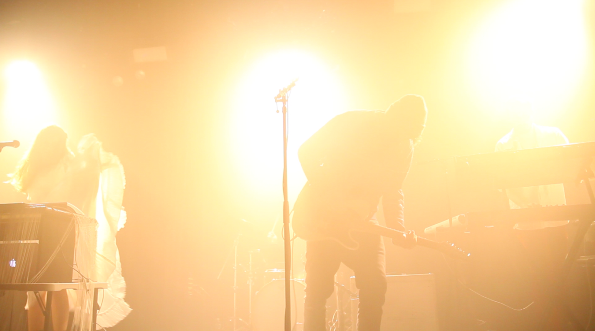
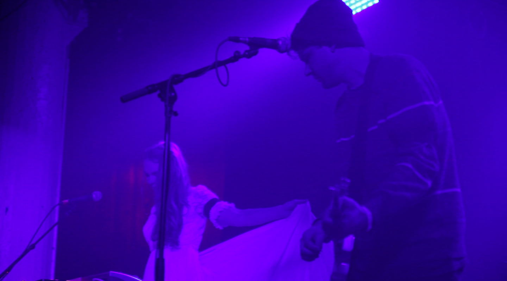

<div class="home">

</div>

<br><br><br><br>

<iframe src="https://player.vimeo.com/video/170250783" width="800" height="450" frameborder="0" webkitallowfullscreen mozallowfullscreen allowfullscreen></iframe>
<br>

Music video for the song "Are You Scared Too? off of <i> The World is Too Much For Me </i>

<br><br>
 </a> <br><br>

 </a> <br><br>

 </a> <br><br>

<iframe width="800" height="450" src="https://www.youtube.com/embed/1Vvz9sxQvGQ" frameborder="0" allowfullscreen></iframe> <br><br><br><br>
Press:
<br><br>

<a href="http://consequenceofsound.net/2012/11/stream-challenger-the-world-is-too-much-for-me-cos-premiere/?iframe=true&preview=true">Consequence of Sound</a><br><br>

<a href="http://ghettoblastermagazine.com/2012/from-the-horses-mouth-john-ross-of-challenger-on-the-world-is-too-much-for-me/">Ghetto Blaster</a><br><br>
<a href="http://www.imposemagazine.com/bytes/new-music/challenger-life-in-the-paint-jesu-remix">Impose</a><br><br>

<a href="http://survivingthegoldenage.com/challenger-the-world-is-too-much-for-me/">Surviving the Golden Age</a><br><br>
